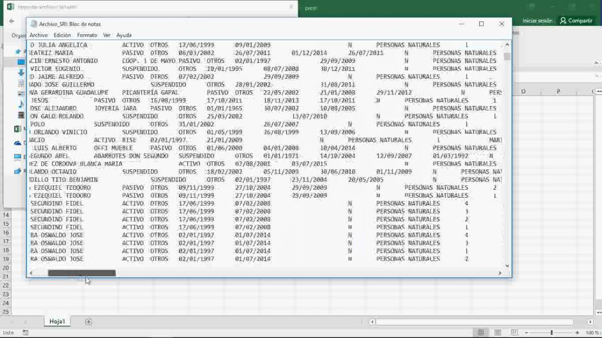
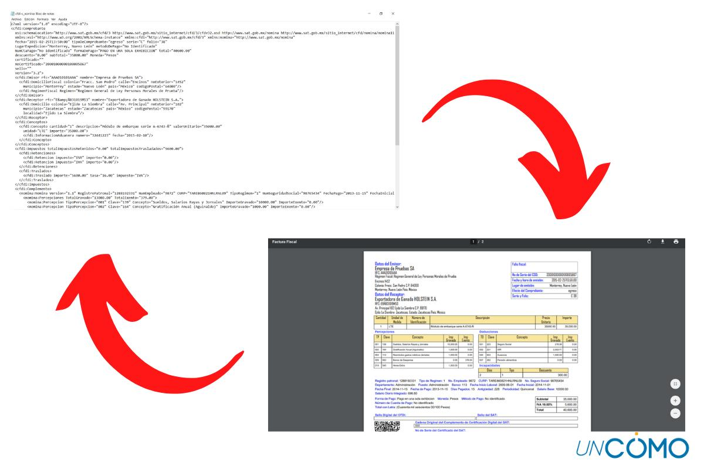

¿Qué es un archivo plano? Un archivo plano es una colección de datos almacenados en una base de datos bidimensional en la que se almacenan cadenas de información similares pero discretas como registros en una tabla. Las columnas de la tabla representan una dimensión de la base de datos, mientras que cada fila es un registro separado.
1. Archivo Plano
Uno de los ejemplos de archivos planos más destacados es un archivo de valores separados por comas (CSV). Un archivo CSV es aquel en el que los datos de la tabla se recopilan en líneas de texto del Código estándar estadounidense para el intercambio de información (ASCII) con el valor de cada celda de la tabla separado por una coma y cada fila representada por una nueva línea. Las columnas y filas suelen estar delimitadas por tabulaciones o comas, como en los archivos CSV. Una base de datos de archivos planos consta de una sola tabla.
¿Cuáles son las ventajas de utilizar archivos planos?
Hay varias ventajas que ofrecen los archivos planos sobre las bases de datos relacionales y otros formatos de archivo. Estos son algunos de los beneficios que hacen que los archivos planos sean tan populares en la actualidad:
Los archivos planos almacenan todos los registros en un solo lugar de una manera fácil de entender. La integración de archivos planos con otros formatos de archivo y bases de datos respalda el crecimiento empresarial con una mayor visibilidad de los datos y los procesos.
Los archivos planos son fáciles de configurar e integrar, lo que los convierte en una excelente opción para el análisis rápido de datos.
Las pequeñas empresas pueden usar fácilmente archivos planos sin muchos recursos adicionales debido a su pequeño tamaño, que esencialmente reduce los costos involucrados en la administración de recursos sin comprometer el rendimiento.
Ejemplo de Archivo Plano
Video explicación avanzada de Archivo Plano
Referencia:
https://youtu.be/JG4FtfAiPE4
2. Archivo Tipo XML
El lenguaje de marcado extensible (XML) permite definir y almacenar datos de forma compartible. XML admite el intercambio de información entre sistemas de computación, como sitios web, bases de datos y aplicaciones de terceros. Las reglas predefinidas facilitan la transmisión de datos como archivos XML a través de cualquier red, ya que el destinatario puede usar esas reglas para leer los datos de forma precisa y eficiente.
¿Por qué es importante el XML?
El lenguaje de marcado extensible (XML) es un lenguaje de marcado que proporciona reglas para definir cualquier dato. A diferencia de otros lenguajes de programación, XML no puede realizar operaciones de computación por sí mismo. En cambio, se puede implementar cualquier software o lenguaje de programación para la administración estructurada de datos.
Etiquetas XML
Los símbolos de marcado, denominados etiquetas en XML, se utilizan para definir los datos. Por ejemplo, para representar los datos de una librería, puede crear etiquetas como < libro >, < título > y < autor >. El documento XML de un solo libro tendría el siguiente contenido:
< libro >
< título >Introducción a Amazon Web Services< /título >
< autor >Mark Wilkins< /autor >
Las etiquetas ofrecen una sofisticada codificación de datos para integrar los flujos de información en diferentes sistemas.
Un archivo XML se divide en dos partes: prolog y body. La parte prolog consiste en metadatos administrativos, como declaración XML, instrucción de procesamiento opcional, declaración de tipo de documento y comentarios. La parte del body se compone de dos partes: estructural y de contenido (presente en los textos simples).
XML se centra en la simplicidad, la generalidad y la facilidad de uso y, por lo tanto, se utiliza para varios servicios web.
Ejemplo de Archivo XML
Video explicación Archivo XML
Referencia:
https://youtu.be/AZihBEg8VBk
3. Archivo Tipo JSON
El formato JSON (JavaScript Object Notation) es un formato abierto utilizado como alternativa al XML para la transferencia de datos estructurados entre un servidor de Web y una aplicación Web. Su lógica de organización tiene puntos de semejanza con el XML, pero posee una notación diferente. El formato ganó popularidad en servicios de la Web, como clientes de correo electrónico y páginas de compras, dado que consigue transmitir una gran cantidad de información entre el cliente y el servidor utilizando una menor cantidad de caracteres.
Los archivos JSON también trabajan con pares de atributos y valores, y en vez de marcadores, como en el XML, utilizan delimitadores en cadenas: {}, []; y "". Un típico archivo JSON queda estructurado de la siguiente manera:
Ejemplo de Archivo JSON

El delimitador { marca el inicio de una sección, y el } marca su finalización. Los pares de valor y atributo están separados por : y sus valores, cuando se trata de texto, se expresan entre comillas (los números, por ejemplo, no reciben comillas). En el ejemplo de abajo, la "localidad 6" es un atributo que recibe una serie de valores (Continente, País y Capital):

Obsérvese que el valor de la "localidad 6" es un nuevo conjunto de pares atributo-valor. Ese nuevo conjunto se inicia a partir del delimitador { y finaliza con }. La lógica de encadenar conjuntos de pares puede ser repetida innumerables veces, creando así diversos niveles para la estructura de datos deseada.
Video explicación avanzada de Archivo Plano
Referencia:
https://youtu.be/wPuS0Vo2Pb4
4. Archivo Parquet
Parquet contiene datos (de tipo tabla) en su interior, de forma similar del fichero tipo CSV. Aunque parezca obvio, los ficheros parquet tienen extensión .parquet y a diferencia de un CSV, no es un fichero en texto plano (se representa de forma binaria), lo que significa que no lo podemos abrir y examinar con un simple editor de texto. El formato parquet es un tipo de formato de los que clasificamos en orientados-a-columnas (column-oriented file format). Existen otros formatos orientados-a-filas o row-oriented. Tal es el caso de los formatos tipo CSV, TSV o AVRO.
La diferencia más extrema la notamos cuándo, en un fichero de tipo CSV, queremos leer solamente una columna. A pesar de que solo queremos acceder a la información de una columna, por el tipo de formato, tenemos irremediablemente que leer todas las filas de la tabla. Cuando usamos formato Parquet, cada columna es accesible de forma independiente al resto. Como los datos en cada columna se espera que sean homogéneos (del mismo tipo), el formato parquet abre un sin fin de posibilidades a la hora de codificar, comprimir y optimizar el almacenamiento de los datos.
A continuación vemos como la herramienta nos muestra el esquema de los datos que contiene el fichero organizado por columnas. Vemos, primeramente, un resumen del número de columnas, filas y versión del formato y el tamaño en bytes. Seguidamente, vemos el nombre de las columnas y a continuación, para cada columna, los datos más importantes, entre los que destacan el tipo de dato. Vemos cómo en la columna “one” se almacenan datos de tipo DOUBLE (apropiado para números reales), mientras que en la columna “two” los datos son de tipo BYTE_ARRAY que sirven para almacenar cadenas de textos.


Video explicación avanzada de Archivo Plano
Referencia:
https://youtu.be/jDfTiz921qE